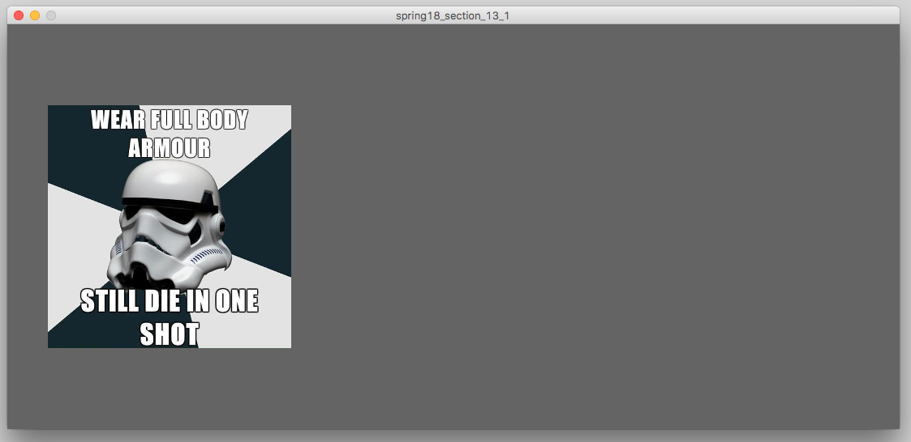
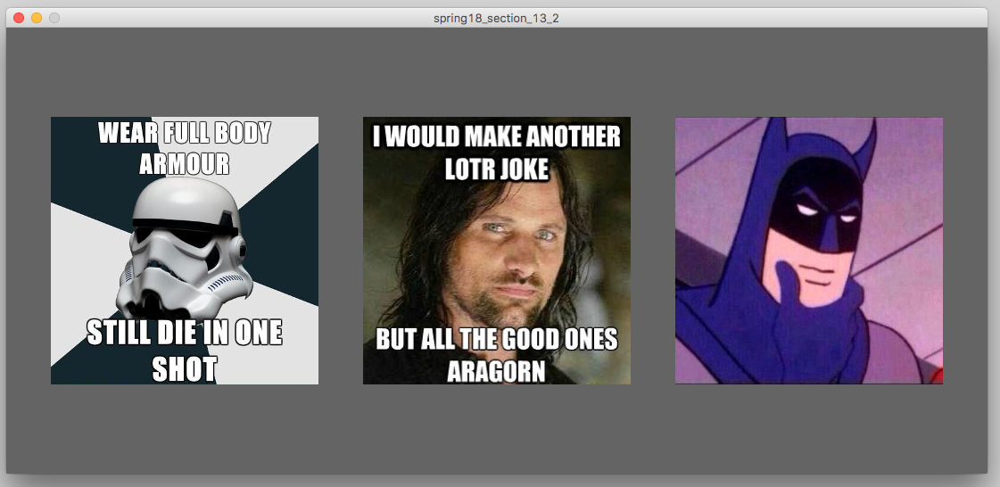
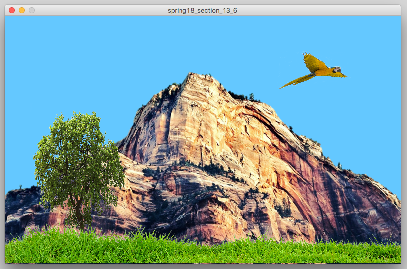

In this section, you are going to work using string methods and displaying various strings and numbers to the canvas and various string methods.
|  |
Write a sketch named section_13_1.
The canvas should be about wtice as wide as it is long.
Use your web browser to find a meme.
Position this meme on the left side of the canvas.
|
|  | Find two additional images/memes online to use in your program. Then, modify the code frm problem 1 by having all three of the images display. Position all three of them on the canvas. One should be in the exact center, and the others should be to the left and right of the center one. |
|
|
Modify the code from the last problem so that the images move downward at the same rate. The images should start off-canvas, and move from the top to the bottom, and then off the canvas again. |

|
Modify the code from the last problem so that the images alternate between moving up and down across the whole canvas. When the images hit either the top or bottom of the canvas, they should switch to moving the opposite direction. I recommend using if statements for this, and a boolean variable to keep track of which direction the images should be moving in. |

|
Modify the code from the last problem so that the images move both left/right and up/down. You can also make the canvas a little taller if you like. When the iamges hit any edge of the screen, they should switch to moving in the opposite direction. This applies to both the x axis and the y axis. Use the same strategy you used in the solution to the last problem, but apply it to both the x and y axis. |
|  |
Create a new processing sketch named section_13_6.
In this program, recreate a scene similar to the on ein the picture using PNG images.
You can use the same PNG images that I used, or find your own online.
You can download the images that I used using the links below:
mountain.png tree.png grass.png bird.png |
{kind=link}
{kind=link}
{kind=link}
{kind=link}